01
STEP 1 · 초1 (2024, 8세)
연산·문장제로 기초 잡기
학원 없이 문제집 위주로 수학을 시작한 첫 해예요. 1학기엔 연산·문장제·시계로 기초를 다지고, 겨울방학엔 3학년 도형까지 미리 손대봤어요.
초1, 1학기 — 수학 문제집 정리
- 기적의 계산법 1권 — 연산 문제
- 기적의 문장제 1권 — 문장제 문제
- 바빠 시계와 시간
- 영재 사고력 수학 필즈 (베이직 상) — 사고력 문제

초1, 2학기 — 수학 문제집 정리
- 기적의 계산법 — 연산 문제
- 기적의 문장제 — 문장제 문제
- 바빠 길이와 시간 계산
- 영재 사고력 수학 필즈 (하) — 사고력 문제
초1, 겨울방학 — 수학 문제집 정리
여름방학은 1주일, 겨울방학이 길었어요! 긴 겨울방학 동안 3학년 도형까지 미리 손대본 시기예요.
- 기적의 계산법 — 연산 문제
- 기적의 문장제 — 문장제 문제
- 쎈 초등 수학 — 교과수학 문제
- 빨라지고 강해지는 이것이 도형이다 (3학년) — 도형 문제
- 영재 사고력수학 필즈 (입문 상) — 사고력 문제
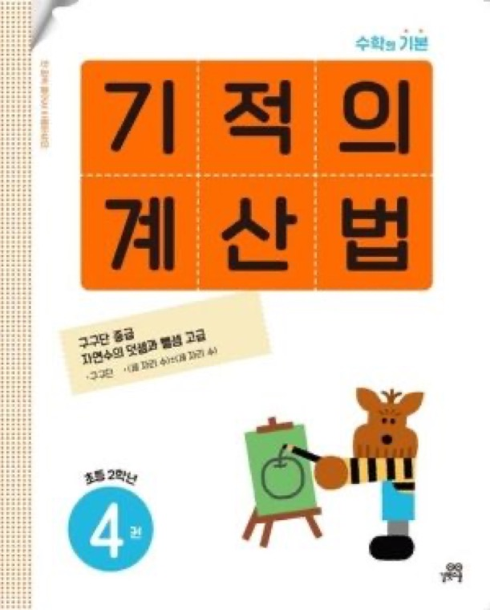
연산
기적의 계산법 (2학년 2학기)
연산 속도와 정확도를 다지는 기본 계산 훈련 교재예요.
겨울방학
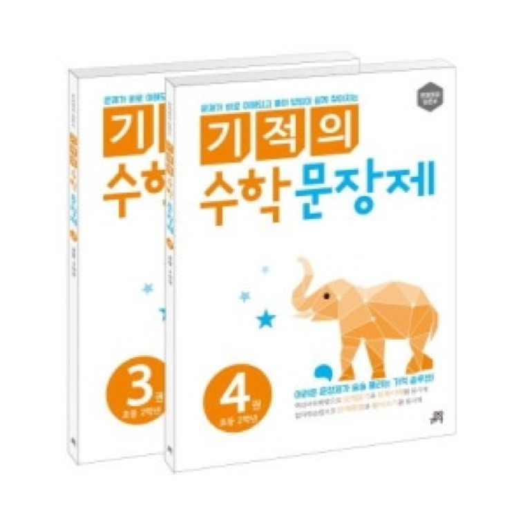
문장제
기적의 문장제 (2학년 2학기)
문제를 이해하고 식을 세우는 문장제 훈련 교재예요.
겨울방학
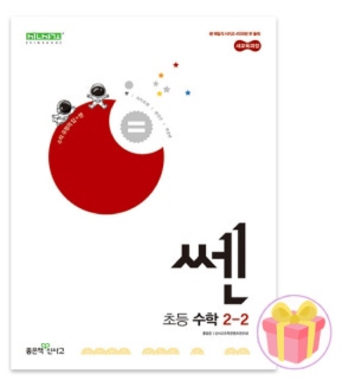
교과수학
쎈 초등 수학 (2학년 2학기)
다양한 유형을 반복 풀이하며 교과 개념을 다지는 교재예요.
겨울방학
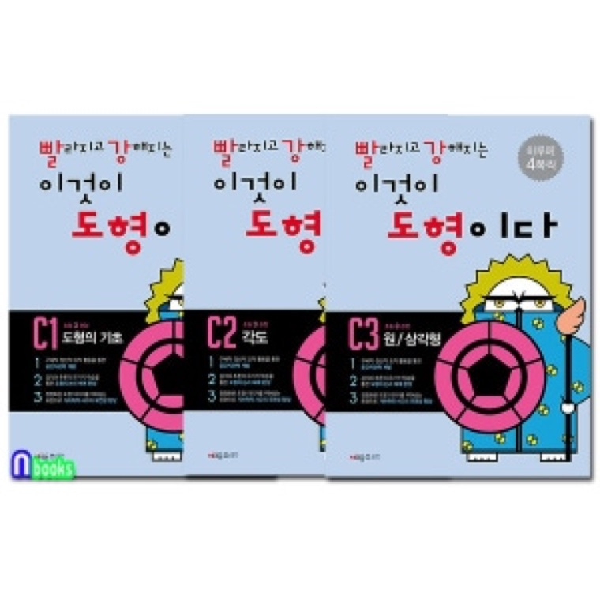
도형
빨라지고 강해지는 이것이 도형이다 (3학년)
도형 감각과 공간 인지력을 키우는 교재예요. 3학년 과정을 미리 손대봤어요.
겨울방학
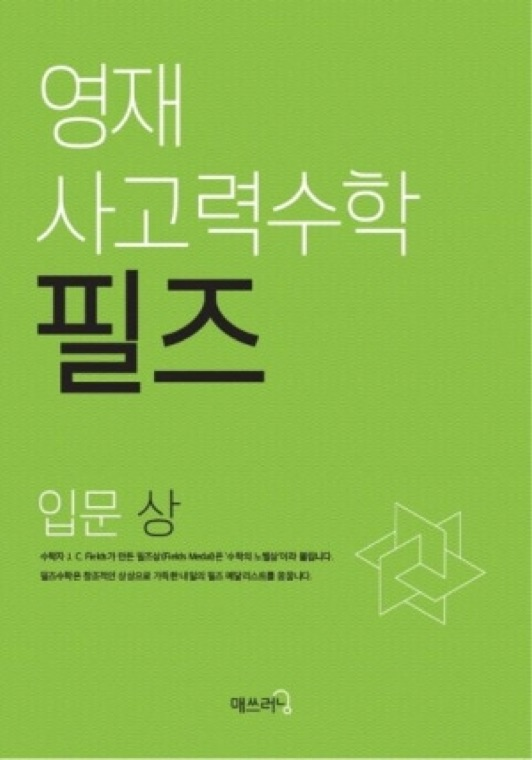
사고력 수학
영재 사고력수학 필즈 (입문 상)
단순 계산을 넘어 생각하는 힘을 키우는 사고력 교재예요.
겨울방학
02
STEP 2 · 초2 (2025, 9세)
필즈 학원, 그리고 다시 엄마표로
1학기엔 도형·사고력으로 영역을 넓히고, 여름방학부터는 필즈 학원을 다니기 시작했어요. 겨울방학엔 필즈를 그만두고 다시 엄마표로 돌아와 예비초3을 준비했어요.
초2, 1학기 — 수학 문제집 정리
- 영재 사고력 필즈 (입문 상)
- 빨강도형 (C3)
- 쎈 (2-2)
- 기탄 수학 (G-3, G-4)
초2, 여름방학 — 필즈 다니기 시작!
사고력은 필즈 학원으로 넘기고, 집에서는 연산·도형만 이어갔어요.
- 필즈 더클셈 7권 (초4-1) — 필즈 학원의 연산 문제집
- 빨강도형 (C3)
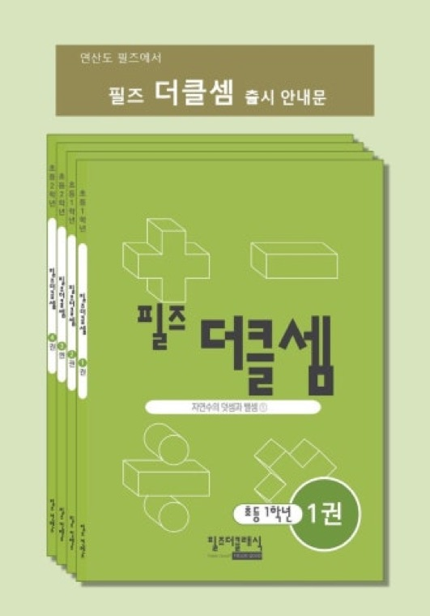
연산 · 필즈 학원 교재
필즈 더클셈 7권 (초4-1)
필즈 학원 자체 연산 교재로, 일반 구매는 불가능해요.
여름방학
도형
빨강도형 (C3)
도형 감각과 공간지각 능력을 키우는 전용 교재예요.
여름방학
초2, 2학기 — 수학 문제집 정리
- 필즈 더클셈 연산 (초5) — 필즈 학원의 연산 문제집
- 디딤돌 기본+응용 (3-1)
연산 · 필즈 학원 교재
필즈 더클셈 연산 (초5)
필즈 학원 자체 연산 교재로, 일반 구매는 불가능해요.
2학기
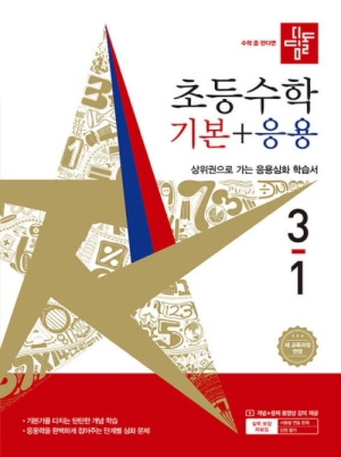
교과수학 · 선행
디딤돌 기본+응용 (3-1)
3학년 1학기 교과 기본 개념과 응용 문제를 정리하는 교재예요.
2학기
초2, 겨울방학 — 예비초3 겨울방학 수학 계획표
필즈 학원을 그만두고, 다시 집에서 엄마표로! 개념 → 응용 → 심화 → 연산 → 도형 순서로, 방학 동안 무리하지 않는 구성으로 짰어요.
- 디딤돌 기본+응용 (3-1) — 3학년 1학기 교과 기본 개념 + 응용 문제
- 점프왕 수학 최상위 (3-1) — 디딤돌로 익힌 개념을 최상위 문제로 심화
- 바빠 교과서 연산 (4-1) — 연산 감각 유지 + 속도 훈련
- 필즈 더클셈 5-2 — 고학년 연산 선행 유지용 (필즈 자체 교재, 구매 불가)
- 빨강 도형 (D1·D2·D3) — 도형 감각, 공간 인지력 강화
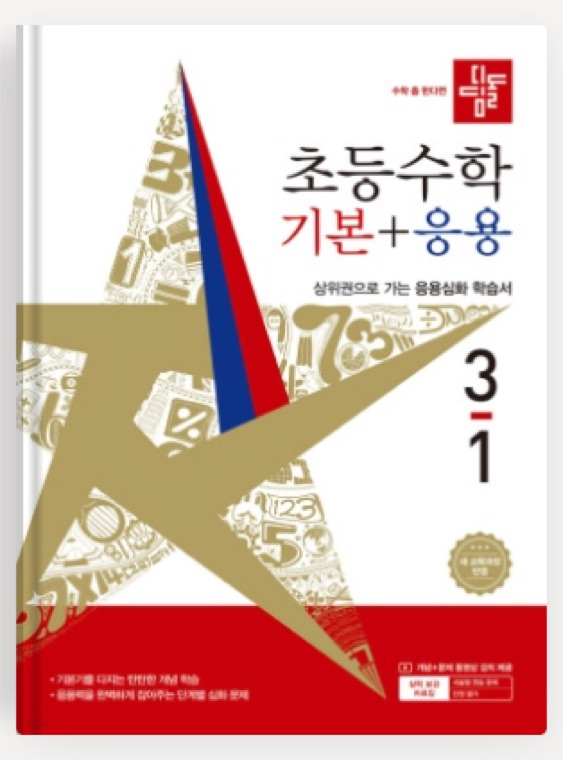
교과수학 · 선행
디딤돌 기본+응용 (3-1)
겨울방학 동안 3-1 전체 흐름을 한 번 잡는 용도. 설명→예제→응용까지 단계가 안정적이에요.
겨울방학
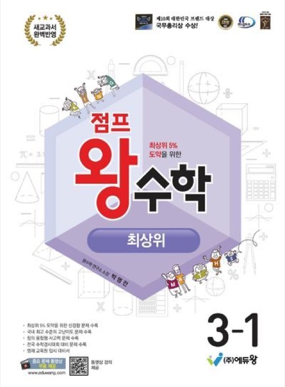
교과수학 · 최상위
점프왕 수학 최상위 (3-1)
개념은 아는데 문제에서 막히는지 확인하는 용도. 사고력과 문제 해결력을 체크해요.
겨울방학
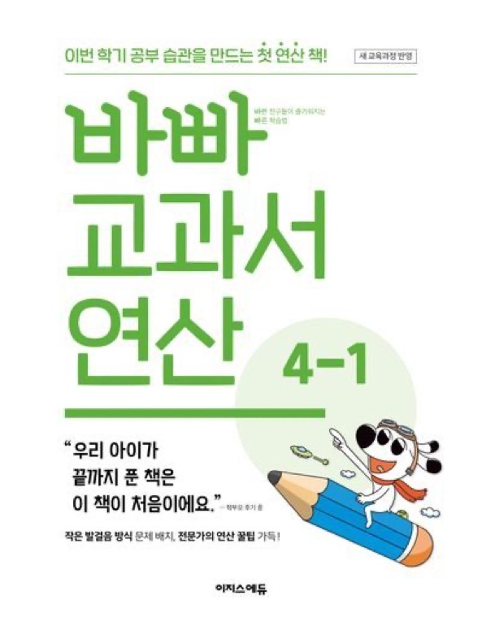
연산
바빠 교과서 연산 (4-1)
하루 1장씩, 이미 다뤄본 연산이라 복습 개념으로 부담 없이 루틴화했어요.
겨울방학
연산 · 필즈 학원 교재
필즈 더클셈 5-2
고학년 연산 선행을 유지하는 용도. 필즈 자체 교재로 일반 구매는 불가능해요.
겨울방학
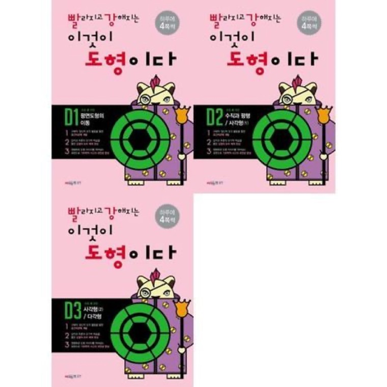
도형
빨강 도형 (D1·D2·D3)
수·연산과 다른 영역이라 아이 집중도를 환기시켜요. 초1 겨울방학에 C1~C3를 끝낸 상태예요.
겨울방학
🎯 목표
- 3학년 1학기 디딤돌 기본·응용 + 최상위까지 최대한 진행
- 연산은 부담 없이 매일 감 유지
- 도형은 빨간 도형 시리즈 완주가 목표
- 2개월 동안 모두 완료가 목표지만, 진행 상황에 따라 무리하지 않고 조절
03
STEP 3 · 초3 (~여름방학까지) (2026, 10세)
선행연산 + 현행심화, 두 트랙 병행
공부 학원 없이, 엄마표 루틴으로 전과목 안정화를 시작한 시기예요. 필즈 학원에서 다녔던 선행을 이어가는 연산 트랙과 학교 진도에 맞춘 현행 심화 트랙을 함께 병행하고, 여름방학엔 다소 느렸던 진도를 조금 더 끌어올리는 것에 집중했어요.
문제집은 많아 보이지만,
실제로는 시간이 아닌 '꾸준함'으로 설계한 루틴💗
3월~5월 — 수학 문제집 정리
- 연산1 (심화) — 필즈 더클셈, 하루 1바닥
→ 속도 + 정확도 유지용 - 연산2 (보완) — 바빠 교과서 연산 4-2, 하루 1바닥
→ 분수 등 헷갈리는 부분 보완, 개념 안정용 연산 - 도형 — 빨강 도형 D3, 하루 1~2장
→ 3학년 겨울방학 때 못 끝낸 도형 마무리, 공간 감각 유지 - 교과 기본 — 수학 리더 3-2, 하루 1.5~2장
→ 개념은 스스로 진행 - 교과 심화 — 점프왕 최상위 (3-1), 하루 1바닥~1장
→ 가장 오래 걸리는 파트 - 경시 대비 — KUT 기출, 주 1회 모의고사
→ 실전 감각 익히기
연산 (빠른 선행)
필즈 더클셈 10권 (초5 과정)
학년보다 높은 연산으로 두뇌 체력을 미리 만들어주는 상위 레벨 훈련용이에요.
하루 1바닥
연산 (선행)
바빠 교과서 연산 4-2
교과 기반 연산을 안정적으로 다지는 기본기 교재. 더클셈과 병행해 속도·정확도 균형을 잡아요.
하루 1바닥
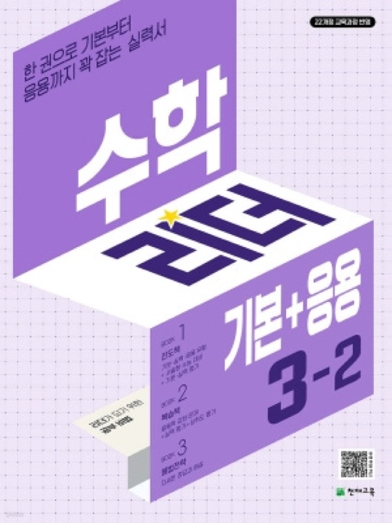
교과수학 기본편 (선행)
수학 리더 기본+응용 3-2
3학년 2학기 개념+기본 응용까지 연결하는 교과서형 문제집. 한 학기 선행으로 전체 흐름을 미리 잡아요.
하루 1.5~2장
교과수학 최상위 (현행)
점프왕 수학 최상위 3-1
현재 배우는 단원의 심화+사고력 확장용. 틀린 문제는 꼭 복기하며 "왜 틀렸는지" 말하게 해요.
하루 1바닥~1장
도형 (선행)
빨강 도형 (D1·D2: 완료 / D3: 진행 중)
도형은 "감"이라 장기전으로 천천히 반복. 연산과 별도로 꾸준히 병행해야 효과가 있어요.
하루 1~2장
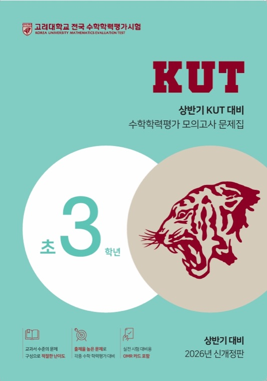
경시 대회 준비
KUT 기출 문제집
시험 대비라기보다 사고력 확장용. 처음엔 시간 제한 없이 풀이 과정에 집중해요.
주 1회, 모의고사 1회
5월~7월 — 수학 문제집 정리
- 교과 심화 — 점프왕 최상위 3-2, 하루 3장
→ 가장 오래 걸리는 파트 - 개념 수학 — 그림으로 개념 잡는 초등수학 5-1, 주 1회
→ 헷갈려하는 개념, 인강으로 익히기
교과 기본응용+최상위를 쪼개서 풀게 했더니 세월아 네월아 풀어서… 기본응용은 몰아서 끝낸 후, 최상위만 집중하는 방식으로 바꿨어요.
📌 수학 루틴 핵심
- 연산은 하루 5~10분 → 부담 없이 꾸준히
- 기본응용은 몰아서 끝내고, 최상위만 집중 → 시간 대비 효율 구조
- 전체 수학 공부 시간 약 1시간 내외
여름방학 — 수학 진도, 조금 더 끌어올리기
초3이 된 경빈이는 수학 진도가 너무 느린 편이었어요. 매일 놀이터는 포기할 수 없다 보니 하루에 수학 1쪽, 많아야 1장 정도 겨우 하는 날이 많았거든요. 그래서 이번 여름방학은 수학 진도를 조금 더 끌어올리는 것에 집중하고 있어요.
그렇게 열심히 진도를 나갔는데도
1년 선행은커녕 아직 반 학기 정도 선행 중이에요🤣
개념만 빠르게 넘어가기보다 심화까지 꼼꼼하게 챙기다 보니 진도가 쭉쭉 나가지는 않아요.
연산 (빠른 선행)
필즈 더클셈 11권 (초6 과정)
학년보다 높은 연산으로 두뇌 체력을 미리 만들어주는 상위 레벨 훈련용이에요.
하루 1쪽씩
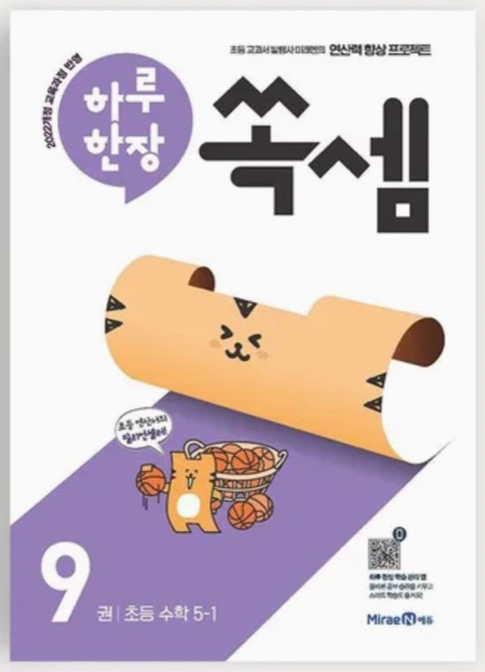
연산 (선행)
하루 한장 쏙셈 (5-1)
교과 연산을 반복하며 계산력과 정확도를 다지는 교재. 빠르게보다 실수 없이 정확하게 계산해요.
하루 1장씩
개념 수학
그림으로 개념 잡는 초등수학 5-1
헷갈리는 파트만 골라 주말에 인강으로 개념을 다시 정리해요.
헷갈리는 파트만
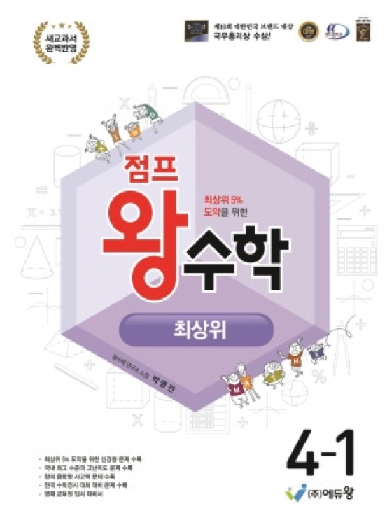
교과수학 최상위
점프왕 수학 최상위 4-1
교과 개념을 바탕으로 심화 문제를 풀며 사고력·문제 해결력을 키워요. 어려운 문제는 여러 방법으로 충분히 생각해봐요.
하루 4장씩
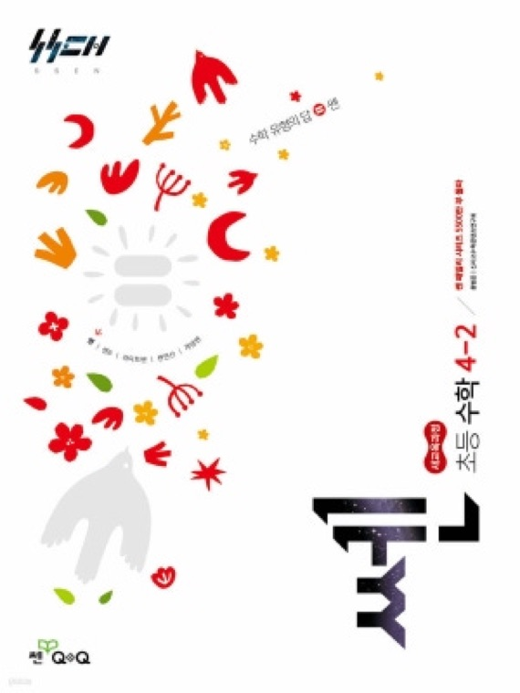
교과수학 선행
쎈 초등수학 4-2
다양한 유형의 문제를 반복 풀며 개념을 탄탄히 다지는 교재. 틀린 문제는 다시 풀며 부족한 유형을 보완해요.
하루 5장씩
💬 투빈맘 한 줄 기록
황소수학 시험도 도전해보고 싶었지만, 진도가 부족해서 시험도 제대로 못 치는 현실이었어요…ㅠㅠ
(그럼에도 도전은 해봤지만요… 큰 의미는 없었던 걸로…ㅎㅎ)
그래서 이번 여름방학은 수학 진도 조금 더 끌어올리기!에 집중하고 있어요✨
(그럼에도 도전은 해봤지만요… 큰 의미는 없었던 걸로…ㅎㅎ)
그래서 이번 여름방학은 수학 진도 조금 더 끌어올리기!에 집중하고 있어요✨